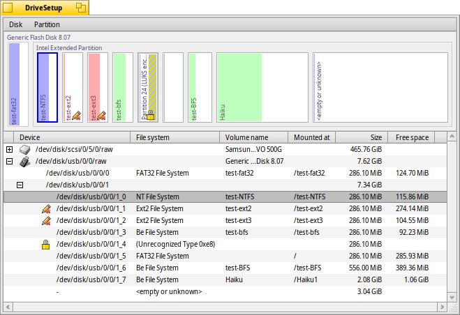
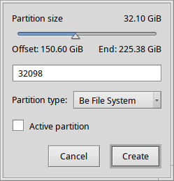

日本語
日本語 Français
Français Deutsch
Deutsch Italiano
Italiano Русский
Русский Español
Español Svenska
Svenska Українська
Українська 中文 ［中文］
中文 ［中文］ Português
Português Suomi
Suomi Slovenčina
Slovenčina English
English DriveSetup
DriveSetup
| Deskbar メニュー： | ||
| 場所： | /boot/system/apps/DriveSetup | |
| 設定ファイル： | ~/config/settings/DriveSetup |
DriveSetupはパーティションの作成、削除、初期化をするツールです。このツールでは既存のパーティションのリサイズや移動はできないので、パーティションが作成されていないディスク(外部USBドライブや別のハードディスクなど)を用意するか、GParted LiveCDのようなツールで初期化をする必要があるでしょう。
一番上の図は、下のリストで選択されたデバイスのパーティションの分割状態を表しています。それぞれのデバイスは4つまでのプライマリパーティションに分割でき、それぞれがいくつかの拡張パーティションや論理パーティションを格納することができます。論理パーティションの詳細を見るためには、+/-ボタンでリストを展開する必要があるかもしれません。
リストからパーティションを選択して、ALT M / ALT Uを押すか、メニューから操作することで、マウント/アンマウントを行うことができます。
からパーティションの削除もできます。
 新しいパーティションを作成する
新しいパーティションを作成する
上の画像のように<empty>となっている未フォーマットのスペースがあれば、もしくはALT Cのショートカットで、パーティションを作成できます。
ダイアログでパーティションのサイズとタイプを調節してください。パーティションをHaikuのインストールに用いる、またはHaikuの特徴的な属性値やクエリーを使用したい場合は、をパーティションタイプに設定してください。また、のパーティションは他のOSからアクセス出来ないことにご注意ください。
もし、拡張パーティションや論理パーティションと一緒にプライマリパーティションをひとつのディスクに作成した時、ダイアログにというチェックボックスが現れます。パーティションをHaikuのブートディスクとして利用するにはチェックしてください。
新しく作られたパーティションを使用する前に、ファイルシステムを初期化する必要があります。
パーティションの初期化
アンマウントされたパーティションをから初期化することができます。

ダイアログにパーティションの名前とブロックサイズを入力してください。ブロックサイズは2048が推奨されますが、特別な必要性があるならより大きなサイズにもより小さなサイズにも設定することができます。
初期化することでパーティションのすべてのデータが消されるので、注意してください！